01 Chapter 01 — Why This Book Exists: The Five Verbs of Sport Analytics
Watching, tagging, modelling, interpreting, acting — and why the field's arguments are really about which verb a tool performs
1.1 The Reader: You Already Live Here
You are the person in a professional team, a performance unit, or a federation who is responsible for AI and cutting-edge technology. You read research papers on a Tuesday, you tried a new vision model on Wednesday, and on Thursday you were asked why the report said what it said. This book is written for that job: a field manual for building a sport-analytics workflow that combines computer vision, LLMs, VLMs, sensors and agentic orchestration — and that can defend every number it produces.
The job has a specific shape. You sit between coaches who want answers in football language, executives who want to know whether the tooling bill is worth it, and a frontier that ships a new model every month. Your week alternates between maintenance, papers, experiments, and the hardest task of all: defending a number in front of a coach who cares about the decision, not the benchmark. This book treats that meeting as the real acceptance test.
You also inherit a fragmented stack [source-backed: method brief]: video in one tool, GPS load files in another, medical and wellness data somewhere else, and manual tagging in a spreadsheet. The data exists; the joins do not. A collision spike, a video frame, and a tactical error often live in three systems. That fragmentation is why the book works in both pickleball and Australian Rugby League: pickleball is the fast fixed-camera build; rugby league is the moving-camera stress test. A method that survives both will usually survive a third sport.
1.2 The Five Verbs
Sport analysis is not one job. It is five distinct jobs sharing the same footage, and most arguments about "AI in sport" are arguments about which verb a given tool performs:
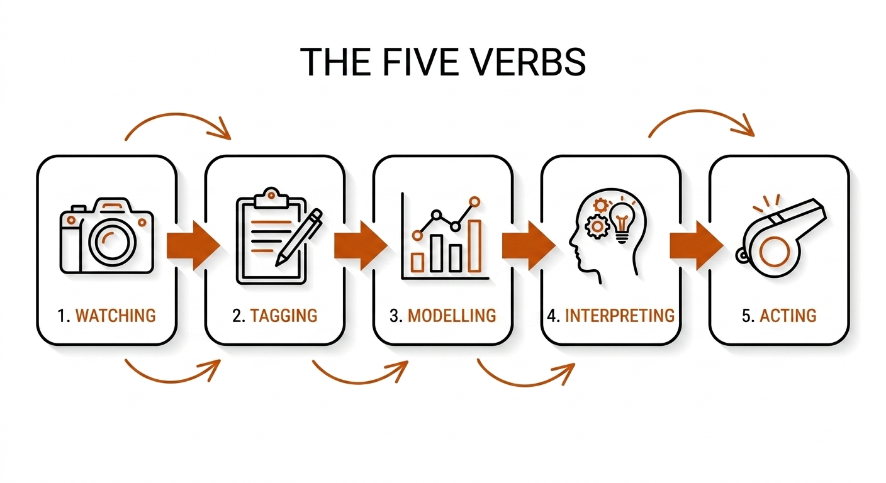
| Verb | The Job | This Book's Chapters | The Common Category Error |
|---|---|---|---|
| Watching | Perception: register where bodies, limbs, and balls are in space and time | C04-C16 (capture through video understanding) | Believing a detector "sees" when it scores a box |
| Tagging | Eventing: convert continuous perception into discrete labeled events | C17-C19 (schema, annotation, automatic eventing) | Confusing a bounding box with a coaching insight |
| Modelling | Statistical physics: quantify space, value, and expected outcomes | C20-C24 (statistics, ratings, value, tactical ML, simulation) | Reporting an accuracy number without a confidence interval |
| Interpreting | Reasoning: extract tactical meaning and a diagnosis | C25-C27 (VLMs, narratives, the agent harness) | Letting a VLM decide what the semantics mean |
| Acting | Decision & practice: the coaching call, the drill, the intervention | C28-C31 (live cockpit, practice design, hardware, rights) | Prescribing a drill from evidence that couldn't support it |
Each verb has a characteristic failure in each of our two sports, and the failures differ in instructive ways. Watching fails in pickleball at the ball: a 40-hole polymer ball at 60 km/h crosses a 960-pixel frame in a handful of pixels, and single-frame detection drowns in noise (the measured numbers are in section 1.3). Watching fails in rugby league at the camera: broadcast PTZ means the homography mapping pixels to pitch metres is re-estimated every pan, and twenty-six bodies in a ruck defeat naive trackers. Tagging fails in pickleball when "paddle contacted ball" is asserted during an occlusion; it fails in rugby league when a play-the-ball is tagged from a camera still panning to catch up with it. Modelling fails in both sports the same way: a precise number on an unverified input is a precise fiction. Interpreting fails when a vision-language model is asked what a clip "means" and obliges with fluent tactics for events that never occurred. Acting fails when a drill is prescribed off a metric whose error bars are wider than the effect it claims.
The through-line: each verb consumes the one before it and cannot skip ahead. Tagging without watching is speculation; modelling without tagging is noise; interpreting without modelling is storytelling; acting without interpreting is guessing. The book's whole architecture is this dependency chain, and its evidence contract (section 1.3, formalized in chapter 2) exists because every arrow in Figure 1.1 is a place where error enters and compounds. A tracking jitter of half a metre becomes a mistagged event, becomes a biased model feature, becomes a confident wrong diagnosis, becomes a Thursday meeting you lose.
1.2b Case Study: The Five Verbs on a Pickleball Third Shot
Make the chain concrete on the single most analysed shot in pickleball: the third-shot drop. The serving team has returned serve; the rules (the two-bounce rule, in the USA Pickleball rulebook) force them to let the return bounce, and the entire rally hinges on whether the third shot — usually a soft drop into the non-volley zone, the kitchen — lets the serving team reach the kitchen line without being attacked. Here is the same ball, five times:
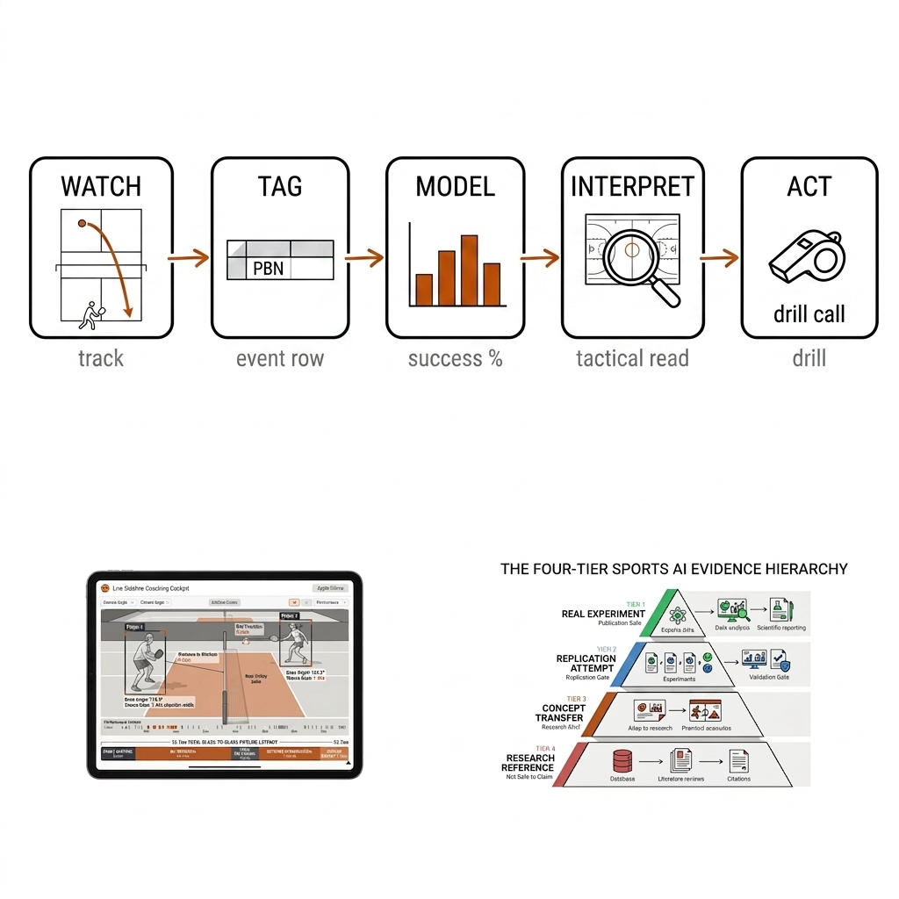
Watching. A fixed camera behind the baseline is calibrated once against the known court geometry — the homography $H$ that maps every pixel to court coordinates, because the court's dimensions are known to the centimetre (chapter 6). Players are detected and tracked; the ball is the hard part. In this book's own ball experiments (C12-lab), single-frame detection of the ball produced a precision-at-50 of 0.042 — forty-eight of every fifty "ball" detections were noise — while a three-frame temporal-difference approach that looks for the accelerating projectile reached 0.814 with 76.2% track continuity [measured: experiments/c12-ball/outputs/metrics.json]. The verb "watching" for a third shot therefore means: court-metric player trajectories plus a ball track that only exists because the pipeline exploits motion, not appearance.
Tagging. The continuous tracks become one discrete row in the book's Pickleball Notation (PBN) schema (chapter 17): serve, return, third-shot drop, with the ball's bounce point in court coordinates, the striker's position, and both opponents' kitchen-line positions at contact. The tag is only as honest as the watch: if the ball track dropped out mid-flight, the row says so rather than interpolating silently.
Modelling. Accumulate hundreds of tagged third shots and the modelling verb can price the decision every doubles player faces: drop or drive. The model estimates the probability the drop lands attackable (above net height, short of the kitchen) given the return's depth and pace, and the rally-win probability conditional on each choice — with confidence intervals, because chapter 20's statistics discipline treats a bare percentage as an unfinished sentence.
Interpreting. A VLM (chapter 25) is never asked "what happened?" — the tagged rows already know. It is asked to translate the model's finding into tactical language: "your drops from behind the baseline off deep returns are landing attackable 40 cm high; your drops off short returns are not." The interpreter reasons over verified events; it does not invent them.
Acting. The diagnosis becomes a practice intervention (chapter 29): a drill that feeds deep returns and scores the drop's apex height, with the live cockpit (chapter 28) flagging attackable drops in real time during practice. The loop closes where it started — on the court, with a ball.
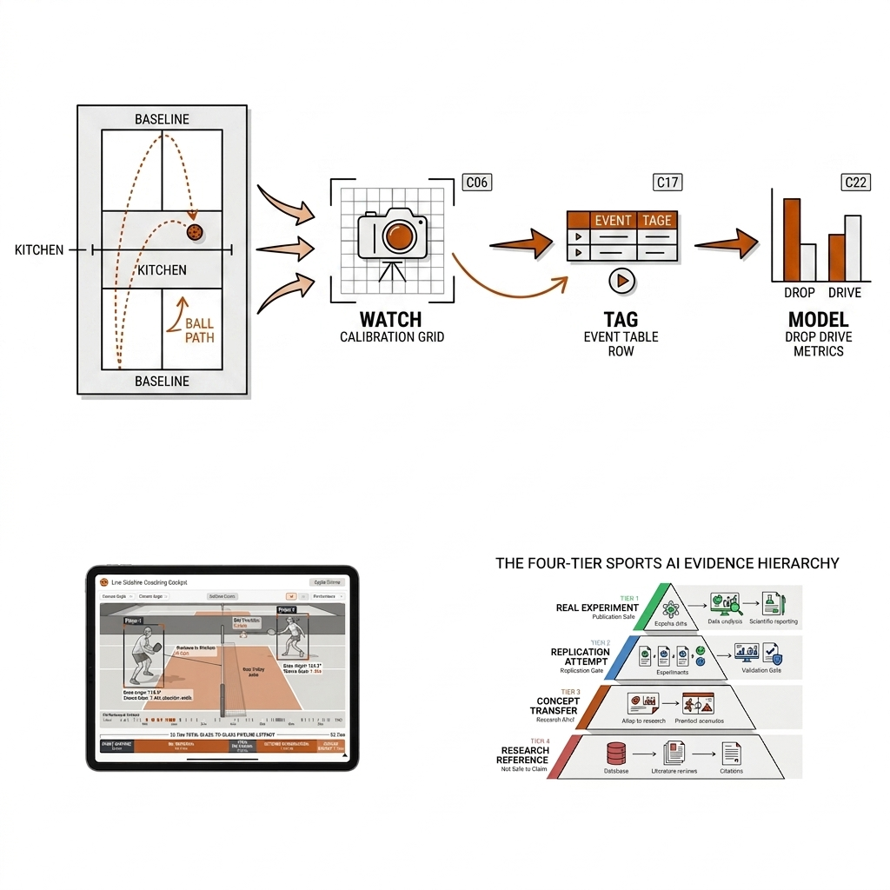
1.2c Case Study: The Five Verbs on a Rugby League Line Break
Now the same five verbs on the play NRL defensive coaches lose sleep over: the line break. An edge ball-carrier — say a centre sweeping behind a decoy runner — splits the defensive line between the opposing second-rower and centre, and forty metres of open field appear. Broadcast footage, moving camera, twenty-six bodies. The stress-test version of every verb:
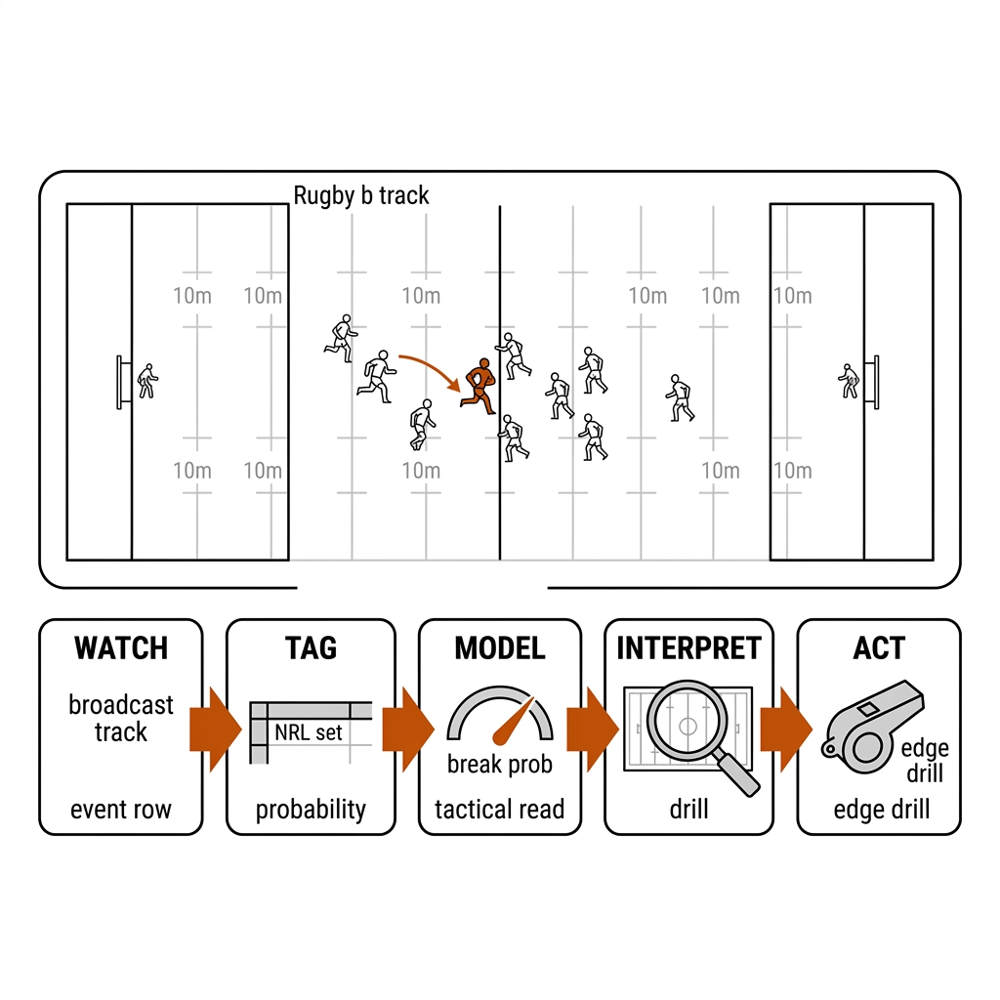
Watching. There is no fixed rig, so the homography is not calibrated once but re-estimated continuously as the broadcast camera pans and zooms — chapter 6's moving-camera problem, the same one Stats Perform solves with calibration plus semantic segmentation and Sportlogiq solves with a virtual rink template [source-backed: method brief]. Players are tracked through the ruck's occlusion clusters, and identity is resolved by fusing weak visual signals (jersey numbers when visible) with external priors (the roster, the formation, who was at marker) — the identity-by-context trick the pro vendors use, adapted for a laptop (chapter 13).
Tagging. The tracks become a row in the NRLSheet set schema (chapter 17): tackle number, play-the-ball location in pitch metres, ruck speed, defensive line shape at the moment of the break, and the gap geometry — the measured distance between adjacent defenders when the ball-carrier crossed the gain line. A tag asserted while the camera was still panning is marked low-confidence rather than silently trusted.
Modelling. Chapters 22–24 build the value layer: expected-point value of the field position before and after the break, and the counterfactual question — $\Delta\text{EPV}$ if the edge had held. One hypothesis this book's agent harness carries as a worked example: line breaks occur when edge compression between second-rower and centre drops below roughly three metres [proposed — a practitioner-model threshold to verify against the tagged dataset, not a measured constant]. The modelling verb's job is to turn that hypothesis into a number with error bars, or kill it.
Interpreting. The interpreter agent reads the model output against the tactical picture: was the break caused by the defensive spacing, by a slow play-the-ball that let the attack set early, or by the decoy runner holding the inside defender? Three different diagnoses, three different drills — and the VLM is constrained to reason over the tagged rows, not to re-narrate the video from vibes.
Acting. The output is an edge-defense drill for Tuesday's session (chapter 29): replicate the spacing failure at walking pace, then at speed, with the same tracking pipeline measuring whether the gap discipline actually improved. The intervention is only as legitimate as the chain underneath it — which is why the chain, not any single model, is the thing this book teaches you to build.
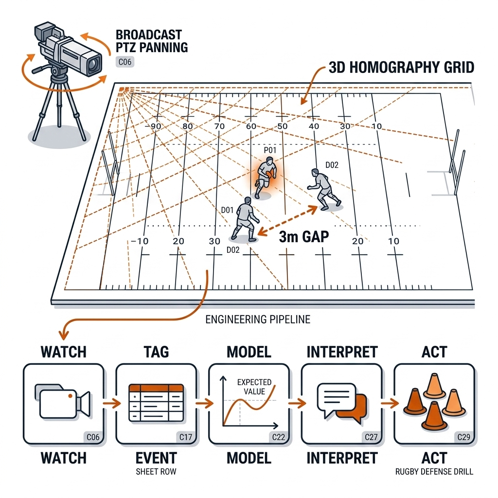
1.2d Why the Pipeline Is the Product
Here is the uncomfortable fact the vendor demos skip: the models are not the moat. Across Second Spectrum, SkillCorner, Stats Perform, Sportlogiq, Hudl, Veo, and Pixellot, the same core spine appears [source-backed: method brief]: capture → calibrate → detect → track → resolve identity → detect events → derive metrics → one canonical data spine. Second Spectrum's advantage is the single source of truth, not a magical detector. Catapult is the useful contrast: wearables measure load, not tactics — video says why, wearables say how hard.
The real moats are infrastructure access, annotation scale, identity resolution, and distribution. That is good news for a team analyst: you may not own the moat, but you can still build the spine. The 4-Rung Ladder names the destination. Most teams are stuck at Rung 2, the point-tool trap: disconnected subscriptions, CSV handoffs, and no closed loop. Rung 3 is the book's target — the five verbs running as one pipeline under an agent harness. Rung 4 is the honest frontier: a match digital twin and counterfactual simulator.
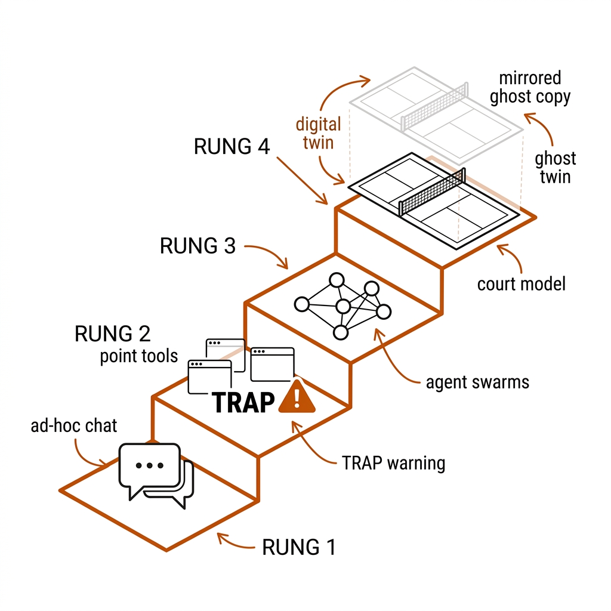
The verb framing and the ladder framing are the same observation from two angles: tools are verbs, pipelines are grammar. A team that buys five Rung-2 tools owns five verbs with no sentence. The product this book teaches you to build is the sentence.
1.2e Case Study: Buy or Build — The Sensor Graveyard
The question arrives as a purchase order. A pickleball program is offered a smart-paddle pre-order that promises power, speed, and spin over Bluetooth; an NRL club weighs a wearables renewal against building the vision stack in-house. It is the same decision in both sports, and it has the same failure mode available: buying a data stream that dies with someone else's server.
The consumer racquet-sensor market is the controlled experiment, and it is already finished. Zepp Tennis went dark around 2020; Babolat Play end-of-lifed on 2021-12-31; the Sony Smart Tennis Sensor followed on 2021-09-30; HEAD's connected racquets, Zepp-based under the hood, died with Zepp — four products, one architecture: a proprietary cloud between the sensor and the athlete, so a single business decision bricked every unit on the same day [source-backed: hardware brief; the full timeline is chapter 30]. The survivors tell the other half of the rule. The Catapult Vector vest persists in rugby league because the buyer is the club, the data lands in the athlete-management system over CSV/API export, and load monitoring is embedded in periodization — institution, exit, mandate. The smart ball survives only where a league holds the license (the Sportable Gilbert in rugby; Kinexon's 500 Hz IMU in the Adidas Trionda at the FIFA World Cup) [source-backed: hardware brief].
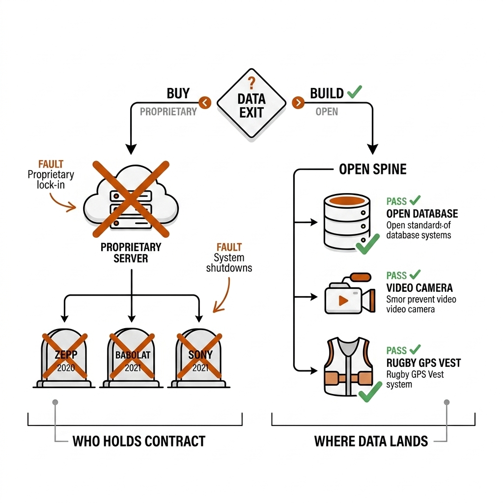
The pipeline path for the decision runs through four chapters. Chapter 5 sets the spine rule the survivors all obey: open formats, queryable on your own hardware. Chapter 4 prices the camera rig that makes vision the default build. Chapter 30 inventories every sensor tier against the export test, and chapter 31 prices the rights and deployment reality. The extracted rule: data exits matter more than data entry. Buy where no vision substitute exists — a camera cannot measure how hard a 105 kg prop accelerated into contact, so rugby league collision load is a buy. Build where vision already answers the question — shot speed, placement, spacing — because the camera the player already owns out-distributes the sensor they have to charge. For pickleball there is no credible smart paddle at all: the only attempt is a pre-order with no independent validation [verify], so the paddle question is a build-by-default.
The payoff. A two-question procurement test — who holds the contract? where does the data land? — that would have kept four dead products out of the bag, and that converts the budget meeting from a vendor pitch into an architecture review.
1.3 The Evidence Contract, Announced
Chapter 2 formalizes it; every chapter enforces it. The short version: a claim is only as good as the artifact backing it. Every quantitative statement in this book carries one of five labels — measured (produced by the book's own labs, artifact on disk), source-backed (traceable to a named external source), concept-transfer (verified in an adjacent domain, pending here), proposed (a hypothesis or practitioner heuristic, not yet measured), or unknown (the honest answer). A paragraph with an unlabeled number fails review; that is the Claim-Evidence-Reasoning discipline applied to the book itself.
This book's own build is the proof the contract is necessary. During assembly it caught its predecessor quoting transcript values that contradicted the measured files: an E12 result quoted as 0.882 → 0.303 when the artifact says 0.64 → 0.22; an E03 pose speed of 39 fps when the measurement file says 82 fps [measured: experiments/e03-pose/outputs/metrics.json]; an aerodynamics statement that was dimensionally wrong. Those corrections are the method at work, and they are why the evidence contract is chapter 2, before any technique.
Three measured anchors make the contract concrete. On the reference pickleball clip (pb-003), generic YOLO11n person detection yields 69 raw boxes; court-filtering rejects 84% as noise, leaving 11 [measured, VERIFIED: claims register C-01]. Zero-prompt SAM segmentation returns 51 masks but costs 10.7 seconds per frame on the reference M4 Max [measured: experiments/c10-segmentation/outputs/metrics.json]. And the ball wall from section 1.2b — 0.042 precision single-frame versus 0.814 with temporal reasoning [measured: C12-lab] — shows why the failure belongs to the verb, not the detector brand.
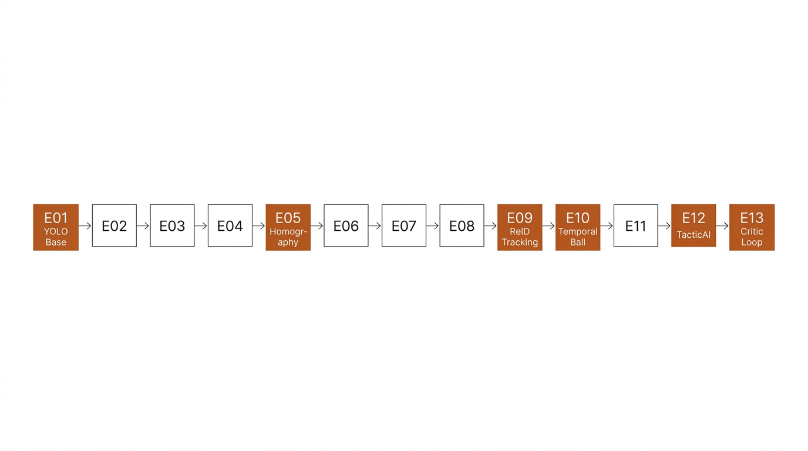
The contract's enforcement machinery is deliberately boring: a claims register (claim → experiment → artifact path, with empty cells marked UNVERIFIED), labs that run in CI so a broken lab is a false claim (the nbdev discipline: prose, runnable code, and tests in one artifact), and adversarial review where a second pass tries to break each argument before publication. Section 1.4 explains who performs that review, because in this book it is not always a human.
1.3b Case Study: The Honest Failure — A Hallucination, Exhibit A
Why does the contract exist at all? Because the shortcut is so tempting. VLMs are fluent, frames are cheap, and "just ask the model what happened" feels like a pipeline. Experiment E07 tried exactly that: six still frames from the reference pickleball clip (pb-003), one prompt — "describe only what is directly observable" — and a small local VLM (Qwen2.5-VL-3B) [measured: experiments/e07-vlm-narration/outputs/metrics.json]. No watching, no tagging, no modelling. Straight to interpreting.
The measured result is the exhibit. The adversarial audit (E13) found 4 hallucinated events in 6 event claims — a 66.7% hallucination rate, status: UNSAFE FOR COACHING [measured: experiments/e13-vlm-adversarial-loop/outputs/metrics.json]. The raw narration is kept on disk as evidence, degeneration included: its "not safe to claim" list loops the same sentence dozens of times, which is what a model with no grounding does when asked to be careful. Then the same six frames went through the multi-agent generator–critic loop, this time with the PBN coordinate summary (chapter 17's tagged rows) attached. The critic cross-referenced every generated verb against the velocity and zone tables: 4 claims falsified and stripped, 0 retained, 0.0% hallucination, status: VERIFIED & PUBLICATION-SAFE [measured: same artifact]. Same model class, same frames — the only change was the loop.
| Architecture | Input | Hallucinated Events | Rate | Status |
|---|---|---|---|---|
| Single-agent raw frames (E07) | 6 stills only | 4 of 6 claims | 66.7% | UNSAFE FOR COACHING |
| Generator–critic loop (E13) | 6 stills + PBN coordinate summary | 0 retained (4 stripped) | 0.0% | VERIFIED & PUBLICATION-SAFE |
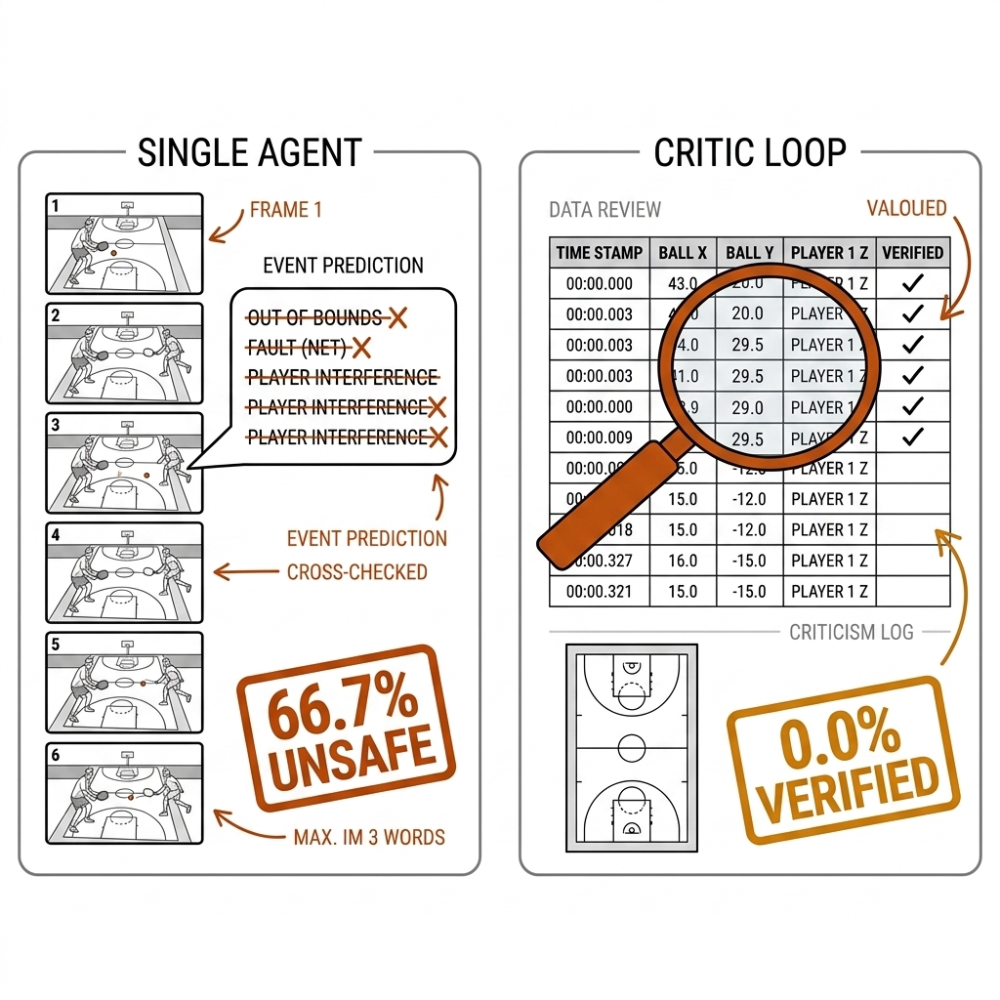
The rugby league version is worse, not better. A broadcast clip mid-pan gives a VLM motion blur and twenty-six partially occluded bodies, and the model will still narrate fluently — inventing a strip, a knock-on, a defensive fold that never occurred. The broadcast variant of the critic therefore checks camera pan velocity and track-identity switches before any event claim is allowed through [proposed — the harness chapters carry the broadcast loop; measured to date only on pb-003]. The pipeline path is the point: chapter 17 supplies the rows, chapter 25 supplies the model, chapter 27 supplies the critic, and the failure lives exactly where section 1.2 said it would — interpreting without modelling is storytelling.
The payoff. The gap between unsafe and publication-safe was not a bigger model; it was a loop with a coordinate table. A 3B-parameter model plus a critic beat the same model alone by 66.7 points of hallucination. That is the cheapest accuracy in the book, and it is why no narrative in these pages ships ungrounded.
1.4 The Agent Harness, Announced
This book is written for humans and agents, and the agent path is structural, not decorative. The reason is a trio of failure modes documented in the Teamwork research on multi-agent analysis loops [source-backed: Teamwork brief]: agreement bias (a single model accepts its own noisy detections as ground truth), hallucination cascades (a VLM invents an unobserved event and builds fluent tactical advice on the false premise), and premature convergence (the loop settles on generic coaching filler instead of a bounded insight). Every one of these is a pipeline verb failing silently — watching lying to tagging, interpreting lying about modelling — and the fix is the same as the fix for human analysis: separation of duties.
Chapter 27 defines the harness: eight roles — capture, perception, eventing, model, interpreter, critic, oracle, gatekeeper — each with scoped tools, arranged so that claims are generated by one agent, attacked by a second, and verified against artifacts by a third before a human gate. The Teamwork loop is the operating cycle: hypothesis generation (divergence) → adversarial critique (falsification) → oracle execution (verification against ground truth) → synthesis (recombination). Figure 1.6 shows where the agents sit on the five-verb pipeline; figure 1.7 shows the loop itself.
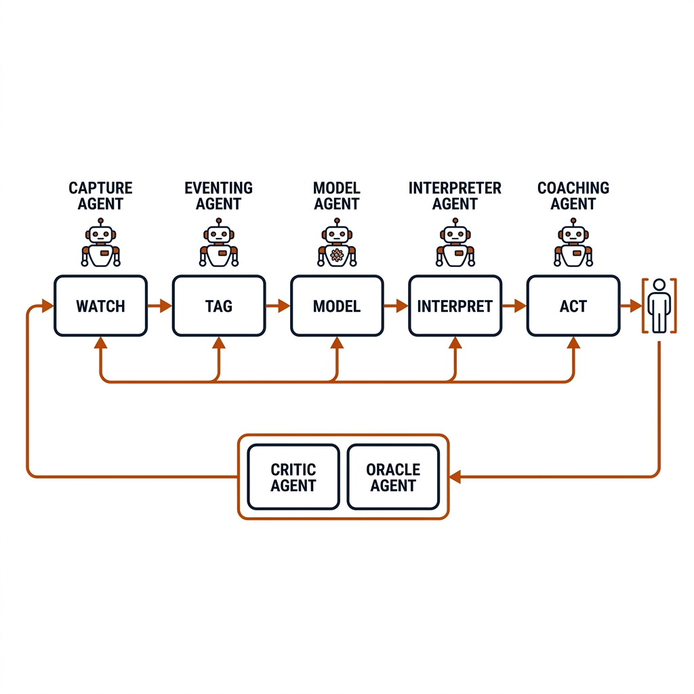
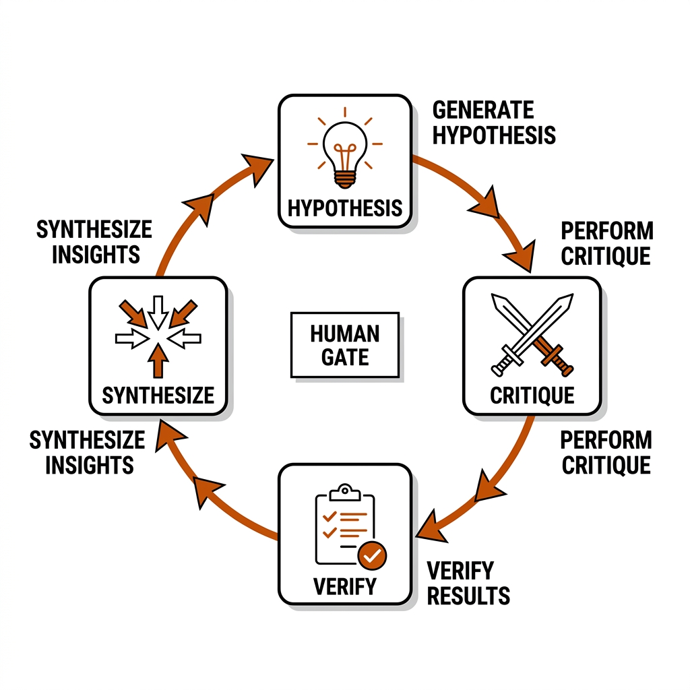
The dual-sport examples make the roles concrete. Pickleball: the model agent proposes that kitchen pressure is predictable from paddle angle and lateral spacing roughly a second before the speed-up; the critic agent attacks the premise — was the paddle angle occluded by the striker's body, was the ball actually in the kitchen; the oracle agent re-projects the tracked feet against the calibrated court plane and the known non-volley-zone line to confirm or kill the claim geometrically. Rugby league: the model agent proposes the sub-three-metre edge-compression threshold from section 1.2c; the critic checks broadcast-specific artifacts — camera pan velocity at the moment of the break, track-identity switches inside the ruck; the oracle re-estimates the homography across the zoom change to verify the pitch-metre scaling the threshold depends on [proposed worked example; the harness chapters carry it end to end]. In both sports the pattern is identical: the agent that generates never grades its own work.
The book-as-spec design follows from this: an agent can read the chapter 17 schema, run the chapter 32 labs, query the chapter 5 one-spine, and answer only through the chapter 27 critic. Chapters 27 and 34 define the harness and the two reading paths; the reason they exist is that the pipeline's consumers increasingly are not human, and a pipeline that cannot be audited by an agent cannot be trusted by one either.
1.4a Case Study: The Harness Carries One Claim End to End
Section 1.4 announced the roles; here is one claim travelling through all of them. Take the rugby league hypothesis from section 1.2c: line breaks occur when edge compression between second-rower and centre drops below roughly three metres [proposed — practitioner threshold, unverified]. A single agent would check a few clips, find confirming examples, and hand a coach a number. Here is what the harness does instead.
The perception agent extracts the tracks (chapters 9 and 13) and discloses its uncertainty — identity switches inside the ruck, frames lost to the pan. The tactical modeler converts the tracks to pitch metres through chapter 6's re-estimated homography and computes the edge gap at every play-the-ball, tagging the moments it cannot measure rather than interpolating. The critic agent attacks the premise: is the apparent compression a camera artifact — pan velocity at the moment of the break inflating apparent spacing? Are the "breaks" a tagging selection effect? The oracle agent verifies the scaling the whole claim rests on, re-projecting known pitch markings across the zoom change. Only then does the coaching translator draft the drill, and the human gatekeeper signs or kills it. The pickleball parallel runs identically: the kitchen-pressure hypothesis — paddle angle plus lateral spacing roughly a second before the speed-up — with the oracle re-projecting tracked feet against the known non-volley-zone line to confirm positions geometrically [source-backed: Teamwork brief].
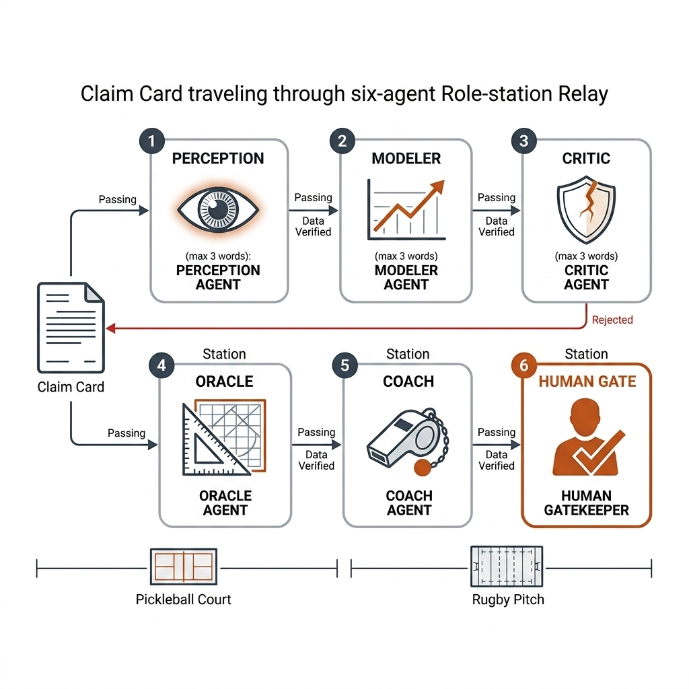
The promotion gate is the measurable part. A claim enters the book or the dashboard only with an artifact on disk, an explicit failure boundary, and a documented adversarial audit [source-backed: Teamwork brief]. The measured existence proof that the loop earns its keep is E13 from section 1.3b: every hallucinated claim stripped before publication, 66.7% → 0.0% [measured: experiments/e13-vlm-adversarial-loop/outputs/metrics.json]. Chapter 27 defines the eight roles and their scoped tools; chapter 34 carries the agent recipes so the loop above is a re-runnable procedure, not a paragraph.
The payoff. The claim that survives the harness arrives with its scars visible — what was checked, what was stripped, what remains proposed. A coach can attack it, and the attack lands on evidence instead of on you.
1.4b What This Book Will Not Cover
A field manual is defined by its exclusions. This book does not cover:
- Vendor procurement or camera-rights deals. Those are business moats, not chapter topics.
- Training foundation models from scratch. The default here is fine-tune or prompt an existing model.
- Full sport-science physiology. Chapters 29–30 touch workload only where it joins the video pipeline.
- Officiating automation. The pipelines inform; they do not replace referees.
- Betting products. Expected-value models are used for coaching decisions, not wagering.
- A buyer's guide. Commercial tools appear as state-of-the-art references, not shopping advice.
The rule behind every exclusion is simple: if a team's AI person cannot build, verify, and defend it with their own footage and hardware, this book will name the boundary instead of pretending otherwise.
1.5 How to Read This Book
Read in wave order if you are building the stack end to end: foundations (C01-C05), watching (C04-C16), tagging (C17-C19), modelling (C20-C24), interpreting (C25-C27), acting (C28-C31), systems (C32-C34). If you are role-based, chapter 34 gives three shorter paths: coach, analyst, engineer. Every chapter keeps the same spine: practitioner question, fundamentals, state of the art, pickleball lab, rugby transfer note, hardware flag, sources.
Two reading rules matter. Read the transfer note even if you only care about one sport; it is where hidden assumptions surface. And when a number matters, trace it back to the artifact before you repeat it.
1.6 How to Use the Book as a Practitioner (The Front-Door Recipe)
The recipe below is the shortest path from this chapter to a defended number. It assumes nothing but the footage you already have and the hardware you already own:
- Start with chapter 2 (the evidence contract) before any model — the discipline is the tool.
- Follow the path for your role: coach (one hour: C01, C03, C28, C29, C34), analyst (one weekend: C01-C05, C20, C26, C32), engineer (two weeks: the wave order).
- Run the labs — every chapter's evidence is a runnable script; the runner (C32) is the single entry point.
- Identify your Colab lanes — GPU-only tasks (TrackNetV4 fine-tune, GVHMR 3D, triangulation) are flagged per chapter.
- Check the hardware flag — M4 Max (the book's reference machine) vs Colab (the GPU lanes).
- Re-verify before citing the frontier — chapter 33's staleness rule: a fast-moving claim older than six months is a history claim.
- Contribute back — the dataset, the NRLSheet schema, the rugby simulator, the agent recipes (chapter 34).
Front-door checklist (one page, pin it above the desk):
[ ] Which verb is this tool/model actually performing? (Figure 1.1)
[ ] Which rung is my program on today? (Figure 1.4)
[ ] What artifact backs the number I am about to quote? (claims register)
[ ] Verified in pickleball, rugby, or marked pending? (transfer note)
[ ] Who reviewed it adversarially — human, critic agent, or nobody? (C27)
Reference: experiments/*/outputs/metrics.json is the ground truth, always.1.6b Case Study: Earning Trust — The First Ninety Days
The recipe above is mechanical. This case is the human one: how a new AI person inside a professional team turns the pipeline into trust. The setting is interchangeable — a performance-analytics hire at an NRL club, or the analyst at a high-performance pickleball program — because the starting condition is the same: zero credibility balance, and a head coach whose prior is every vendor demo that overclaimed. Trust is not granted with the job title; it accrues one defended number at a time.
Weeks 1–2: show a receipt. Pick one number the coach already believes and re-derive it with an artifact — for example, person detection on practice footage: 69 raw boxes, 84% rejected by court-filtering, 11 real players remaining [measured, VERIFIED: claims register C-01]. The point is not the number; it is that the coach watches you produce the receipt. Weeks 3–6: the lab habit. Every claim in the weekly report carries its artifact path, and when a lab breaks you say so in the meeting — chapter 32's CI discipline (a broken lab is a false claim) applied to your own credibility. Months 2–3: the first intervention. One drill prescription with error bars and a stated failure boundary (chapter 29), measured again after a fortnight — and reported honestly even when the effect is smaller than hoped.
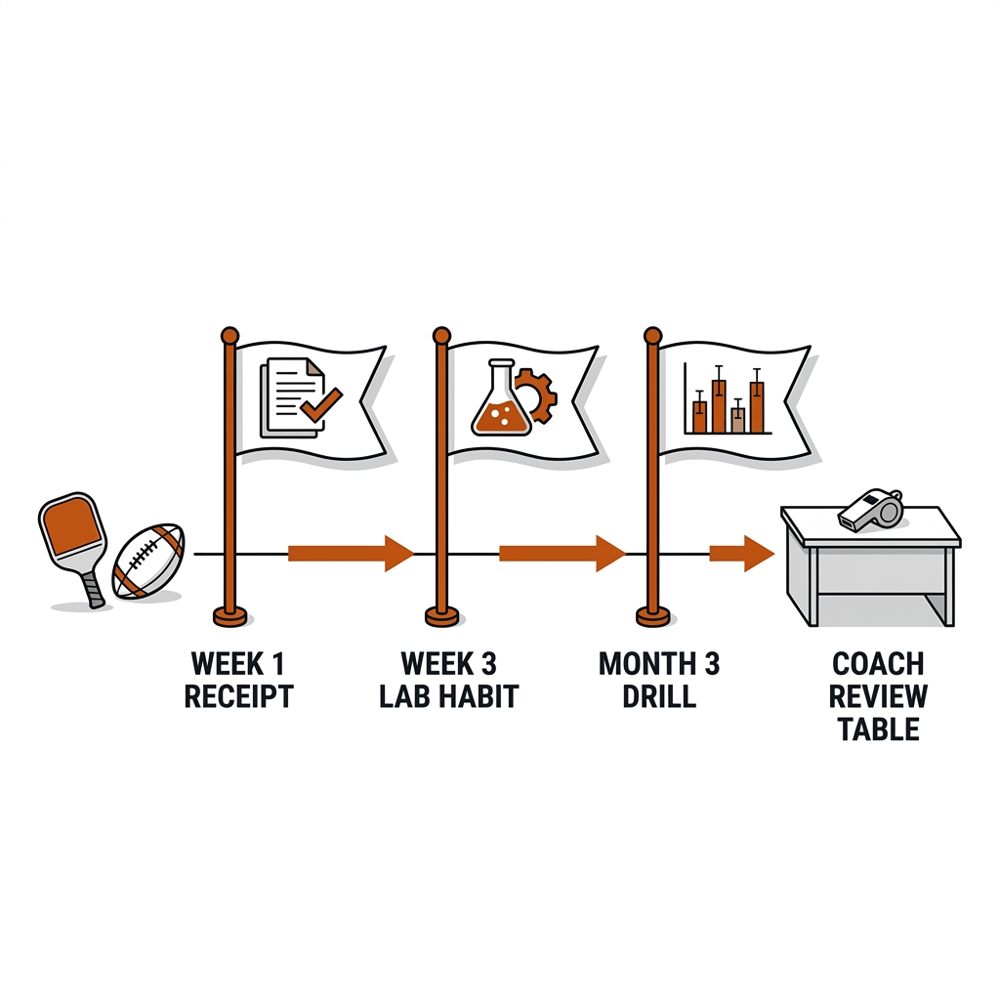
The two sports differ in tempo, not in mechanics. In pickleball the loop runs in days — fixed camera, a repeating opponent pool, a drill's effect visible inside a week — so the trust ledger fills fast. In rugby league the loop runs in weeks and the stakes are selection and welfare: a collision-load claim joins wearable and video data (chapter 30's three-stream fusion), and the same discipline — artifact, interval, failure boundary — is what lets it survive the meeting with the head coach and the physio [source-backed: hardware/fusion brief]. In both, the failure mode to avoid is the big early promise: one overclaimed number spends trust you have not earned yet.
The payoff. Done right, the coach never ends up trusting you — they end up trusting the chain: the artifact, the interval, the audit. That is the only kind of trust that survives you changing jobs, and it is the reason this book teaches a pipeline instead of a personality.
1.7 Key Takeaways
- Five verbs, one chain: watching → tagging → modelling → interpreting → acting; never skip a link, because every arrow is where error compounds.
- Pickleball is the fast path; Rugby League is the stress test — the third shot and the line break are the same pipeline at two difficulties, and the stack must survive both.
- The pipeline is the product: vendors share one spine (calibrate → detect → track → identify → events → metrics → one schema); the moats are infrastructure and distribution, not models, which means a team can build the spine itself.
- Evidence is the method: every claim resolves to a runnable lab and a measured artifact (chapter 2), labeled measured, source-backed, concept-transfer, proposed, or unknown.
- The book is a spec for agents too — the harness (chapter 27) makes it executable, and the Teamwork loop exists because single-agent analysis fails by agreement bias, hallucination cascade, and premature convergence.
- Know the exclusions: no procurement, no foundation-model training, no physiology, no officiating automation, no betting — the book builds what a team can defend.
1.8 Sources
- The workflow dossier (agentic-sport-analysis/book-research/Research Briefs, 2026-08-10 method brief) — the verified pro-pipeline facts (Second Spectrum, SkillCorner, Stats Perform, Sportlogiq, Hudl, Veo, Pixellot, Catapult; the calibrate→detect→track→identify→events→metrics→spine core) this chapter's five-verb structure draws on. Sources cited there include skillcorner.com, statsperform.com, geniussports.com, catapult.com, and github.com/roboflow/sports.
- The research method brief (fast.ai/nbdev, Claim-Evidence-Reasoning, evaluation-driven development) — the anti-shallowness triad the book's labs implement; https://nbdev.fast.ai.
- Teamwork: When AI Becomes a Research Partner (Google Antigravity Blog, 2026-08-27) — the multi-agent research loop, its failure-mode triad, and the six-role team structure adapted into chapter 27's harness; https://antigravity.google/blog/teamwork-when-ai-becomes-a-research-partner.
- The 4-Rung Sports Agentic Ladder and Domain Architecture (Technology Dossiers) — the point-tool-trap analysis and the Rung 1–4 maturity framing in section 1.2d.
- The claims register (agentic-sport-analysis/state/claims-register.json) — the measured claims the evidence contract audits, including C-01 (pickleball-yolo-baseline) cited in section 1.3.
- Lab artifacts cited in this chapter: experiments/e03-pose/outputs/metrics.json (82 fps pose measurement), experiments/c10-segmentation/outputs/metrics.json (SAM cost), experiments/c12-ball/outputs/metrics.json (the ball wall). USA Pickleball rulebook (two-bounce rule) — https://usapickleball.org.
- Lab artifacts for the case studies: experiments/e07-vlm-narration/outputs/metrics.json + narration.txt (the E07 single-agent narration, kept as Exhibit A) and experiments/e13-vlm-adversarial-loop/outputs/metrics.json (66.7% → 0.0% hallucination under the generator–critic loop), cited in sections 1.3b and 1.4a.
- Hardware & sensors research briefs (agentic-sport-analysis/book-research/Research Briefs, 2026-08-30 and 2026-09-04) — the racquet-sensor graveyard dates (Zepp ~2020, Babolat Play EOL 2021-12-31, Sony EOL 2021-09-30, HEAD with Zepp), the export-test survivor analysis (Catapult, STATSports, Polar, VALD, Hawkin), and the smart-ball league-license pattern cited in section 1.2e; full inventory in chapter 30.